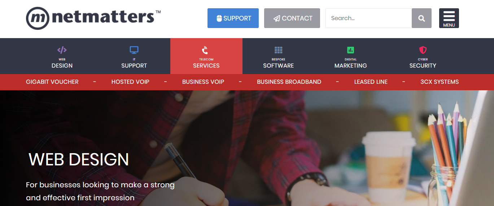

Examples of My Coding
Netmatters Reflection
This was a learning task to build a detailed copy of the Netmatters homepage. Firstly in html/css/sass and then adding javascript functionality and back-end processing. The live example can be found here. An example of the code used can be found below.
Example: Sass Looping
This is an example of the SASS looping I used in order to build the menu. I used SASS looping to dynamically build classes and their bespoke colours and pseudo place icons.
@each $name, $color in $menu_color_map{
#menu-top .wrapper-#{$name}{
.button-#{$name}{
@include flex;
flex-direction: column;
justify-content: center;
align-items: center;
padding: 19px 0 18px;
height: 100px;
width: 200px;
@include MQ('3','and-smaller'){
width: 160px;
}
color: white;
text-decoration: none;
padding-bottom:10px;
}
&:hover{
color: white;
background-color: #{$color};
.icon{ // make icons white on hover.
color:white;
}
.submenu{
a{
color: white;
align-self: center;
text-decoration: none;
}
@include flex;
justify-content: space-between;
align-items: center;
align-content: center;
position: absolute;
top: 100px;
left: 0;
width: 100%;
z-index: 1;
font-size: 1rem;
@include MQ('3','and-smaller'){
width: 90vw;
left: 5vw;
}
height: 45px;
@include make-bgcolor-wide(darken($color, $darken-submenu-amt));
@include fix-normalize-transparency($color);
}
}
}
.icon{
&-#{$name}{
color: #{$color};
padding-bottom: 8px;
@include place-awesome-icon(unquote("#{$name}"),$size: 1.328rem);
@if(unquote("#{$name}")=="telecom"){
@include rotate-phone-icon;
}
}
}
}
The colour map it references is this one....
$menu_color_map:(
'design': $color-design,
'support':$color-support,
'telecom':$color-telecom,
'software':$color-software,
'marketing':$color-marketing,
'security':$color-security,
);
and the html it relates to is......
<div class="wrapper-top-menu">
<div id="menu-top">
<div class="wrapper-design">
<a class="button-design" href="#">
<div class="icon icon-design"></div>
<span class="small">Web</span>Design
</a>
</div>
<div class="wrapper-support">
<a class="button-support" href="#">
<div class="icon icon-support"></div>
<span class="small">IT</span>Support
</a>
</div>
<div class="wrapper-telecom">
<a class="button-telecom" href="#">
<div class="icon icon-telecom"></div>
<span class="small">Telecom</span>Services
</a>
</div>
<div class="wrapper-software">
<a class="button-software" href="#">
<div class="icon icon-software"></div>
<span class="small">Bespoke</span>Software
</a>
</div>
<div class="wrapper-marketing">
<a class="button-marketing" href="#">
<div class="icon icon-marketing"></div>
<span class="small">Digital</span>Marketing
</a>
</div>
<div class="wrapper-security">
<a class="button-security" href="#">
<div class="icon icon-security"></div>
<span class="small">Cyber</span>Security
</a>
</div>
</div>
</div>
The end result is a menu built from efficient sass code which has unique colouring and icon inclusion. You can see the live example here.
Further....
If your interested in finding out more about my current skill-set or want to discuss any open positions which you feel may suit me, please don't hesitate to contact me.
Example of an SQL query containing a table join, subquery and ordering filter
The objective of this example is to demonstrate an SQL query which contains a table join, the use of a subquery and the use of an ordering filter. The database has two tables employees and department. The two tables are joined on a column in the employees database which makes use of a foreign key constraint.
Database Schemas and Contents
The Schema of the employees table is:
+------------+---------------+------+-----+---------+-------+
| Field | Type | Null | Key | Default | Extra |
+------------+---------------+------+-----+---------+-------+
| emp_id | int | NO | PRI | NULL | |
| emp_name | varchar(15) | NO | | NULL | |
| job_name | varchar(10) | NO | | NULL | |
| manager_id | int | YES | | NULL | |
| hire_date | date | NO | | NULL | |
| salary | decimal(10,2) | NO | | NULL | |
| commission | decimal(7,2) | YES | | NULL | |
| dep_id | int | NO | MUL | NULL | |
+------------+---------------+------+-----+---------+-------+
The contents of the employees table:
emp_id | emp_name | job_name | manager_id | hire_date | salary | commission | dep_id
--------+----------+-----------+------------+------------+---------+------------+--------
68319 | KAYLING | PRESIDENT | | 1991-11-18 | 6000.00 | | 1001
66928 | BLAZE | MANAGER | 68319 | 1991-05-01 | 2750.00 | | 3001
67832 | CLARE | MANAGER | 68319 | 1991-06-09 | 2550.00 | | 1001
65646 | JONAS | MANAGER | 68319 | 1991-04-02 | 2957.00 | | 2001
67858 | SCARLET | ANALYST | 65646 | 1997-04-19 | 3100.00 | | 2001
69062 | FRANK | ANALYST | 65646 | 1991-12-03 | 3100.00 | | 2001
63679 | SANDRINE | CLERK | 69062 | 1990-12-18 | 900.00 | | 2001
64989 | ADELYN | SALESMAN | 66928 | 1991-02-20 | 1700.00 | 400.00 | 3001
65271 | WADE | SALESMAN | 66928 | 1991-02-22 | 1350.00 | 600.00 | 3001
66564 | MADDEN | SALESMAN | 66928 | 1991-09-28 | 1350.00 | 1500.00 | 3001
68454 | TUCKER | SALESMAN | 66928 | 1991-09-08 | 1600.00 | 0.00 | 3001
68736 | ADNRES | CLERK | 67858 | 1997-05-23 | 1200.00 | | 2001
69000 | JULIUS | CLERK | 66928 | 1991-12-03 | 1050.00 | | 3001
69324 | MARKER | CLERK | 67832 | 1992-01-23 | 1400.00 | | 1001
14 rows
The Schema of the department table is:
+--------------+-------------+------+-----+---------+-------+
| Field | Type | Null | Key | Default | Extra |
+--------------+-------------+------+-----+---------+-------+
| dep_id | int | NO | PRI | NULL | |
| dep_name | varchar(20) | NO | | NULL | |
| dep_location | varchar(15) | NO | | NULL | |
+--------------+-------------+------+-----+---------+-------+
The contents of the department table:
dep_id | dep_name | dep_location
--------+------------+--------------
1001 | FINANCE | SYDNEY
2001 | AUDIT | MELBOURNE
3001 | MARKETING | PERTH
4001 | PRODUCTION | BRISBANE
4 rows
And Finally The SQL Query Itself
I chose to write an SQL query which returns all of the employees who earn an above average salary, sorted by salary.
The employees database is joined to the department database using the department databases primary key which is referenced from the employees database using a join on a column which makes use of a foreign key constraint (dep_id).
In order to get all employees earning over the average salary I included a subquery in the WHERE clause which compares each employees salary with the returned subquery which calculates the average salary.
The selectors have been formatted to use easy to read labels
SELECT
E.emp_name AS 'Employee Name',
E.job_name AS 'Job Title',
E.salary AS Salary,
D.dep_name AS Department,
D.dep_location AS Location
FROM employees AS E
JOIN department AS D ON D.dep_id = E.dep_id
WHERE E.salary > (
SELECT AVG(salary)
FROM employees
)
ORDER BY E.salary DESC;
The Returned Result Set
The result of the SQL query is a table that contains the employee name, job title, salary, department and location of every employee who earns above the average salary, ordered by salary.
+---------------+-----------+---------+------------+-----------+
| Employee Name | Job Title | Salary | Department | Location |
+---------------+-----------+---------+------------+-----------+
| KAYLING | PRESIDENT | 6000.00 | FINANCE | SYDNEY |
| FRANK | ANALYST | 3100.00 | AUDIT | MELBOURNE |
| SCARLET | ANALYST | 3100.00 | AUDIT | MELBOURNE |
| JONAS | MANAGER | 2957.00 | AUDIT | MELBOURNE |
| BLAZE | MANAGER | 2750.00 | MARKETING | PERTH |
| CLARE | MANAGER | 2550.00 | FINANCE | SYDNEY |
+---------------+-----------+---------+------------+-----------+
6 Rows